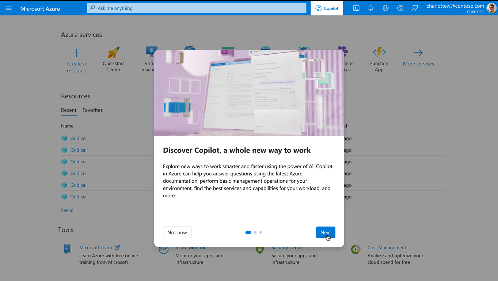

<!DOCTYPE html>
<html lang="en">
<head>
  <meta charset="UTF-8">
  <meta name="viewport" content="width=device-width, initial-scale=1.0">
  <link rel="stylesheet" href="styles.css">
  <link rel="stylesheet" href="https://fonts.googleapis.com/icon?family=Material+Icons">

  <script src="https://code.jquery.com/jquery-3.6.0.min.js"></script>
  <script src="script.js"></script>

  <title>Your Portfolio</title>
</head>
<body class="onboarding-page" style="background-color: #FFFBF7;">
  <nav class="navbar" style="background-color: #FFFBF7;">
    <div class="logo" alt="My Logo">
    </div>
    <button class="menu-toggle"><span class="material-icons" >menu</span></button>
    <ul class="nav-links">
      <li><a href="index.html?section=selected-work-section">Projects</a></li>
      <li><a href="aboutme.html">About Me</a></li>
    </ul>
  </nav>

  <div class="project-banner intelligent-banner">
    
  </div>

  <div class="project-intro">
    <p>Since 2023, I started to work in the work stream of Azure intelligent experience with the goal of incorporating intelligence into the Azure portal. </p>
    <p>Challenged to learn new skills and wield this powerful technology responsibly, I led several projects to enable more natural interactions with users, anticipate their needs in ways not previously possible, and transform human processes into scalable solutions.</p>
  </div>

<div class="project-walkthrough">
  <h2 class="project-name">Azure Copilot First-Run Experience</h2>
  <p>As Azure started to adopt artificial intelligence, a big action is to provide a virtual assistant, Azure Copilot, with which users can have conversations and perform tasks. </p>
  <p>Azure portal is overwhelming since it exposes thousands of pages covering many hundreds of services. There are tens of thousands of configuration options, skus, actions, and architectural choices. The goal of Azure Copilot is that users can engage with the portal using natural language to learn Azure, understand their environment, take action and get help quickly.</p>
  <h3>Needs and Opportunities</h3>
  <p>Since Azure Copilot is a new add-in to Azure portal, we need to provide a first-run experience for users when they opens Azure Copilot for the first time. This experience will help shape user’s impression of Azure Copilot and can strongly influence their likelihood to come back to and continue using Azure Copilot. Together as a team, we defined the needs for Azure Copilot FRE as follow:</p> 
    <ol>
      <li>Provide a simple and brief introduction of Azure Copilot to help users understand its main functionalities, limitations, etc.</li>
      <li>Provide prompt starters for users to easily submit a request and get started with Azure Copilot.</li>
      <li>Provide opportunity for users to explore more prompts. </li>
    </ol> 
  <h3>Design Highlights</h3>
  <p>Through iterative design, we finalized MVP design for the First-Run Experience for Azure Copilot. The design applied Fluent’s AI design guideline but is also customized based on Azure’s specific user needs. </p>
  <h4>Global entry point</h4>
  <p>Provide a global access point to invoke copilot at any time. For first-time users, the teaching bubble will pop up immediately as they log into Azure portal. </p>
  <div class="project-images-container3 add-border">  
    
   </div>
  <h4>First-time walkthrough</h4>
  <p>Provide a 3-step dialog to introduce Azure Copilot, promote basic functionality to get the users interested, tip on how to get started immediately. The FRE is triggered on first launch of the Copilot sidecar, and won't reappear after users click the "Try Copilot" button. </p>
  <div class="project-images-container3 add-border">  
    
   </div>
  <h4>Global prompt starters</h4>
  <p>For first-time users, after clicking "Try Copilot", a prompt starter card is displayed containing a set of static prompt starters, so that users can have limited yet clear suggestions on a glimpse to jumpstart with Azure Copilot.</p> 
  <p>For return users, as long as the users open the Copilot chat from the global entry, they will see the same card, but the prompt starters displayed will be based on their past behavior and featured requests that are most commonly asked.  </p> 

  <div class="project-images-container3 add-border">  
    
   </div>
  <h4>In-context prompt starters</h4>
  <p>If users open the Copilot chat from a nudge component, which is an entry that's intended to promote and notify the users that they can use Copilot for assistance in the current context, Copilot chat will be opened and the nudge can pass in a set of prompt starters. </p>
  <div class="project-images-container3 add-border">  
    
   </div>
   <h4>Opportunity to explore more prompts - next phase</h4>
   <p>Above are the features we provide for MVP. For next phase, we would like to provide users the ability to explore more prompt suggestions. </p>
  


</div>


<section class="bottom-navigation">
  <ul>
    <li><a href="index.html">All</a></li>
    <li><a href="onboarding.html">Azure onboarding experience</a></li>
    <li class="active"><a href="intelligent.html">Azure intelligent experience</a></li>
  <li><a href="core-experience.html">Azure portal core experience</a></li>
  </ul>
</section>

</body>
</html> 


